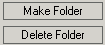

U kunt links maken naar bestanden die opgeslagen zijn op een enxterne server. Nadat u op "zoek naar bestand" heeft geklikt in het Link Inspector paneel (onderaan de editor), opent KTML3 een popup venster dat erg lijkt op het venster voor het invoegen van afbeeldingen. Het venster bestaat uit drie onderdelen:
- het linker paneel, dit laat de structuur van de directory zien, en heeft
twee knoppen: Maak
Folder, Verwijder
Folder;

- het rechter paneel, welke de content vanuit de huidig geselecteerde folder
weergeeft (degene die geselecteerd is op de boomstructuur), en heeft
twee knoppen: Bestand Uploaden,
Bestand Verwijderen;

- het onderste paneel, helpt u bij het configureren van de link.

De bestand verkenner geeft alleen de ondersteunde file types weer: bmp, gif, jpeg, jpg, png, pdf, doc, rtf, txt, mp3, mpg, mpeg, avi, wav, mov, qt, rm.
Be bestand verkenner is gelijk aan degene voor het uploaden van afbeeldingen. U kunt navigeren door de folder structuur, maak/verwijder folders, upload/verwijder files. Voor een geselecteerd bestand dient u het doel venster op te geven.